Metals rarely exist pure in nature: they are found in ores, combined with elements such as oxygen or sulfur, or as carbonates. The extraction method depends on the metal's reactivity:
- Highly reactive metals (aluminium, sodium) need electrolysis, using electrical energy to break down their compounds.
- Less reactive metals (iron) can be extracted by chemical reduction with carbon in a blast furnace, where coke removes oxygen from the ore.
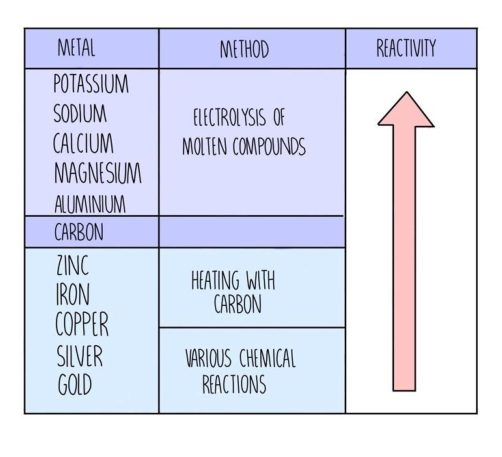
Both methods are based on redox reactions.
7.1 Redox Reactions
Redox reactions involve the transfer of electrons between substances.
| Definition | |
|---|---|
| Oxidation | The gain of oxygen OR the loss of electrons |
| Reduction | The loss of oxygen OR the gain of electrons |
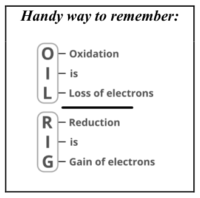
Reduction and oxidation always happen together. The substance that is reduced causes the other to be oxidised, so it is called the oxidising agent; the substance that is oxidised is the reducing agent.
| Oxidising agents (oxidants)… | Reducing agents (reductants)… |
|---|---|
| …oxidise other substances | …reduce other substances |
| …gain electrons | …lose electrons |
| …are themselves reduced | …are themselves oxidised |
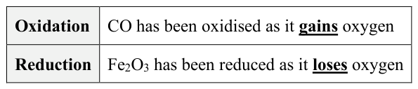
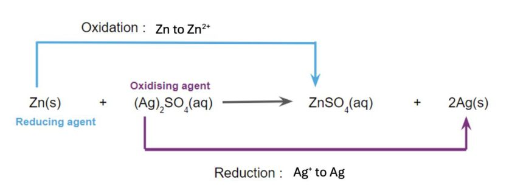
Test your understanding
Which best describes oxidation in a redox reaction?
Explain why oxidation and reduction always occur together.
Electrons (or oxygen) lost by one substance must be gained by another: they can't just disappear. So whenever something is oxidised, something else is reduced.
| Equation | Oxidised | Reduced |
|---|---|---|
| Zn + CuSO4 → ZnSO4 + Cu | ||
| Fe2O3 + 3CO → 2Fe + 3CO2 | ||
| 2AgNO3 + Cu → Cu(NO3)2 + 2Ag | ||
| Mg + FeCl2 → MgCl2 + Fe | ||
| Fe + CuSO4 → FeSO4 + Cu | ||
| PbO + H2 → Pb + H2O |
Explain the difference between an oxidising agent and a reducing agent, in terms of electrons.
An oxidising agent gains electrons (it is reduced) and causes another substance to be oxidised. A reducing agent loses electrons (it is oxidised) and causes another substance to be reduced.
Carbon is used to reduce iron ore: Fe2O3 + 3C → 2Fe + 3CO. Which substance is the reducing agent?
Carbon gains oxygen (forming CO), so it is oxidised, and it removes oxygen from Fe₂O₃, reducing it. The substance that is oxidised is the reducing agent.
7.2 Half Equations and Redox Reactions
Half equations show the oxidation and reduction processes separately, making the electron transfer clear.
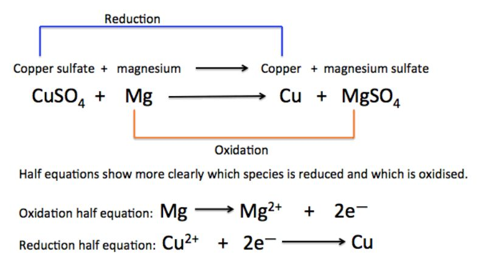
Write the oxidation and reduction half-equations for:
- Zn + CuSO4 → ZnSO4 + Cu
- Mg + 2AgNO3 → Mg(NO3)2 + 2Ag
- Fe + CuSO4 → FeSO4 + Cu
- 2Al + 3FeCl3 → 2AlCl3 + 3Fe
- Pb + 2AgNO3 → Pb(NO3)2 + 2Ag
- Cu + 2AgNO3 → Cu(NO3)2 + 2Ag
- Mg + ZnSO4 → MgSO4 + Zn
- 2Al + 3CuSO4 → Al2(SO4)3 + 3Cu
- Ox: Zn → Zn²⁺ + 2e⁻; Red: Cu²⁺ + 2e⁻ → Cu
- Ox: Mg → Mg²⁺ + 2e⁻; Red: Ag⁺ + e⁻ → Ag
- Ox: Fe → Fe²⁺ + 2e⁻; Red: Cu²⁺ + 2e⁻ → Cu
- Ox: Al → Al³⁺ + 3e⁻; Red: Fe³⁺ + 3e⁻ → Fe
- Ox: Pb → Pb²⁺ + 2e⁻; Red: Ag⁺ + e⁻ → Ag
- Ox: Cu → Cu²⁺ + 2e⁻; Red: Ag⁺ + e⁻ → Ag
- Ox: Mg → Mg²⁺ + 2e⁻; Red: Zn²⁺ + 2e⁻ → Zn
- Ox: Al → Al³⁺ + 3e⁻; Red: Cu²⁺ + 2e⁻ → Cu
- Zn → Zn2+ + e−
- Al → Al3+ + e−
- Ag+ + e− → Ag
- O2 + e− → 2O2−
7.3 Electrolysis
Electrolysis uses an electric current to break a compound down into its elements. It is used to extract highly reactive metals such as aluminium, sodium and potassium, which are too reactive to be reduced by carbon. Positive metal ions (cations) are reduced to metal; negative ions (anions) are oxidised to non-metal elements.
How electrolysis works
- Electrolyte: the substance electricity passes through. It must be molten (melted) or aqueous (dissolved) so the ions are free to move.
- Cathode (negative electrode): attracts cations, which gain electrons (reduction).
- Anode (positive electrode): attracts anions, which lose electrons (oxidation).
- Power supply: a direct current (DC) supply. DC flows in one direction, so ions keep moving to the same electrodes and the reactions proceed steadily.
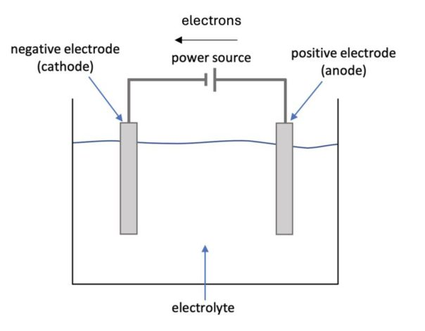
Example: aluminium extraction
Aluminium oxide (Al2O3) is melted because it doesn't dissolve in water. In the molten state the ions are free to move:
- At the cathode, aluminium ions gain electrons to form aluminium: Al3+ + 3e− → Al
- At the anode, oxide ions lose electrons to form oxygen gas: 2O2− → O2 + 4e−
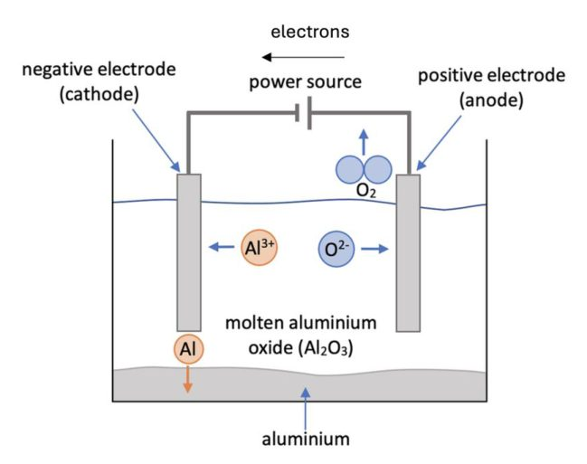
Molten and aqueous electrolysis
- Molten compounds: heating breaks the ionic lattice so ions move freely. Only the compound's ions are present, e.g. molten NaCl gives sodium metal and chlorine gas.
- Aqueous compounds: water also provides H+ and OH− ions, which compete with the compound's ions at the electrodes.
In aqueous electrolysis:
- At the cathode (−): if the metal is more reactive than hydrogen (e.g. sodium, potassium), H+ is reduced and hydrogen gas forms. If the metal is less reactive than hydrogen (e.g. copper, silver), the metal forms.
- At the anode (+): halide ions (Cl−, Br−) are oxidised to the halogen if present; otherwise OH− is oxidised to oxygen gas.
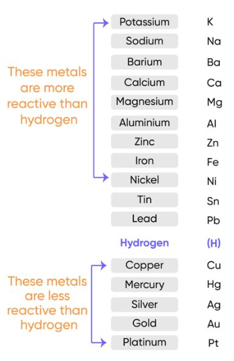
| Molten NaCl | Aqueous NaCl | |
|---|---|---|
| Cathode | Na+ is reduced → sodium metal | H+ (from water) is reduced → hydrogen gas |
| Anode | Cl− is oxidised → chlorine gas | Cl− is oxidised → chlorine gas |
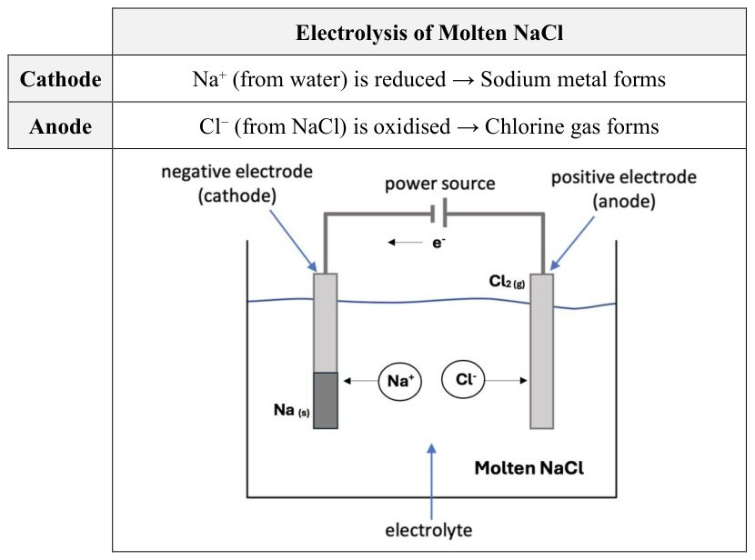
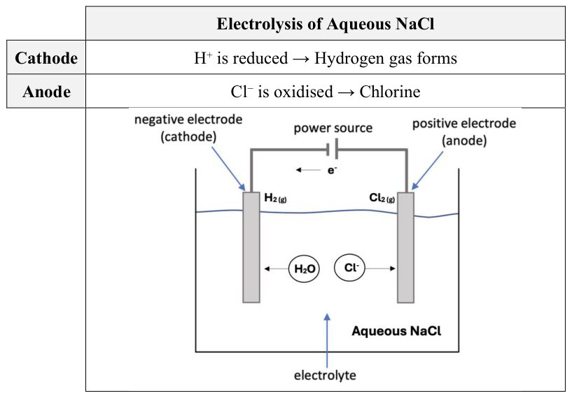
| Electrolyte | Product at cathode | Product at anode |
|---|---|---|
| Molten NaCl | ||
| Aqueous NaCl | ||
| Aqueous CuCl2 | ||
| Aqueous CuSO4 | ||
| Molten Al2O3 |
Copper is less reactive than hydrogen, so copper forms at the cathode. Sulfate is not a halide, so OH⁻ from water is oxidised to oxygen at the anode.
Test your understanding
- Define electrolysis and explain the roles of the electrolyte and electrodes.
- Describe the extraction of aluminium from molten aluminium oxide. What happens at each electrode?
- Why is electrolysis used for aluminium, sodium and potassium instead of reduction with carbon?
- Electrolysis uses an electric current to break down an ionic compound into its elements. The electrolyte (molten or aqueous) contains ions that move and carry the current; the cathode (−) reduces cations and the anode (+) oxidises anions.
- Al₂O₃ is melted so the ions can move. At the cathode, Al³⁺ + 3e⁻ → Al (molten aluminium collects). At the anode, 2O²⁻ → O₂ + 4e⁻ (oxygen gas).
- These metals are more reactive than carbon, so carbon can't remove oxygen from (reduce) their compounds.
- Describe a labelled diagram of the electrolysis of molten NaCl.
- In aqueous NaCl electrolysis, what forms at each electrode and why?
- Explain the difference between molten and aqueous electrolysis. What is the role of water?
- A beaker of molten NaCl with two electrodes connected to a DC supply. Cathode (−): Na⁺ ions attracted, sodium metal forms. Anode (+): Cl⁻ ions attracted, chlorine gas bubbles off. Electrons flow from the anode to the cathode through the wire.
- Cathode: hydrogen gas, because sodium is more reactive than hydrogen, so H⁺ (from water) is reduced instead of Na⁺. Anode: chlorine gas, because halide ions are oxidised in preference to OH⁻.
- Molten: only the compound's ions are present, so its elements form. Aqueous: water provides H⁺ and OH⁻ ions that compete with the compound's ions; the reactivity series decides which are discharged.
- In the electrolysis of molten NaCl, what happens if the current is increased?
- What happens if you electrolyse water? Write the half-equations at each electrode.
- Why is a DC supply necessary? What would happen with AC?
- Explain the competition between ions in aqueous electrolysis.
- More electrons flow per second, so the rate of reaction increases at both electrodes: sodium and chlorine are produced faster.
- Water breaks down into hydrogen at the cathode and oxygen at the anode (twice as much hydrogen by volume). Cathode: 2H⁺ + 2e⁻ → H₂ (or 2H₂O + 2e⁻ → H₂ + 2OH⁻). Anode: 4OH⁻ → O₂ + 2H₂O + 4e⁻ (or 2H₂O → O₂ + 4H⁺ + 4e⁻). Pure water conducts poorly, so a little dilute acid or salt is added.
- DC flows in one direction, so each electrode stays positive or negative and ions keep moving to the same electrode. With AC the electrodes would keep swapping, so the products would form at both electrodes and could recombine: no useful separation.
- In aqueous solutions, both the compound's ions and water's H⁺ and OH⁻ ions are attracted to the electrodes. At the cathode, the ion of the least reactive element is reduced (the metal if it is below hydrogen, otherwise hydrogen). At the anode, halide ions are oxidised if present; otherwise OH⁻ is oxidised to oxygen.
7.4 Blast Furnace
A blast furnace extracts metals like iron from ores such as iron oxide (Fe2O3), using heat and coke (a form of carbon) to remove oxygen from the ore.
- The furnace is filled with iron ore, coke and limestone.
- Hot air is blown in, making the coke burn: C + O2 → CO2. The CO2 reacts with more coke to make carbon monoxide: CO2 + C → 2CO.
- Carbon monoxide reduces the iron ore, leaving molten iron: Fe2O3 + 3CO → 2Fe + 3CO2.
- Limestone removes impurities: it decomposes (CaCO3 → CaO + CO2), and the calcium oxide reacts with sandy impurities (CaO + SiO2 → CaSiO3) to form slag, which floats on top of the iron.
- The molten iron is tapped from the bottom and used to make steel.
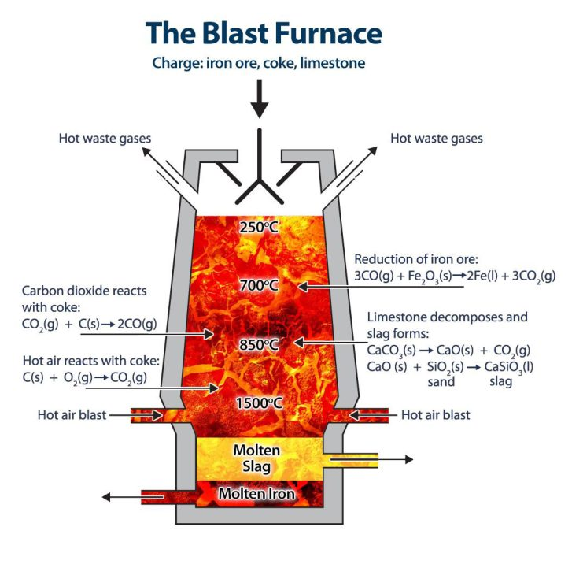
This works for metals less reactive than carbon, like iron. More reactive metals such as aluminium need electrolysis.
- Explain the role of coke in the blast furnace.
- What is the function of limestone, and what waste product does it form?
- Why is the blast furnace not suitable for metals like aluminium? What method is used instead?
- Coke (carbon) burns in the hot air, producing heat and carbon dioxide, which reacts with more coke to form carbon monoxide. CO is the reducing agent: it removes oxygen from iron oxide, leaving iron (Fe₂O₃ + 3CO → 2Fe + 3CO₂).
- Limestone breaks down to calcium oxide, which reacts with impurities (mainly sand, SiO₂) to form slag (calcium silicate), which floats on the iron and is removed.
- Aluminium is more reactive than carbon, so carbon can't reduce aluminium oxide. Electrolysis of molten aluminium oxide is used instead.